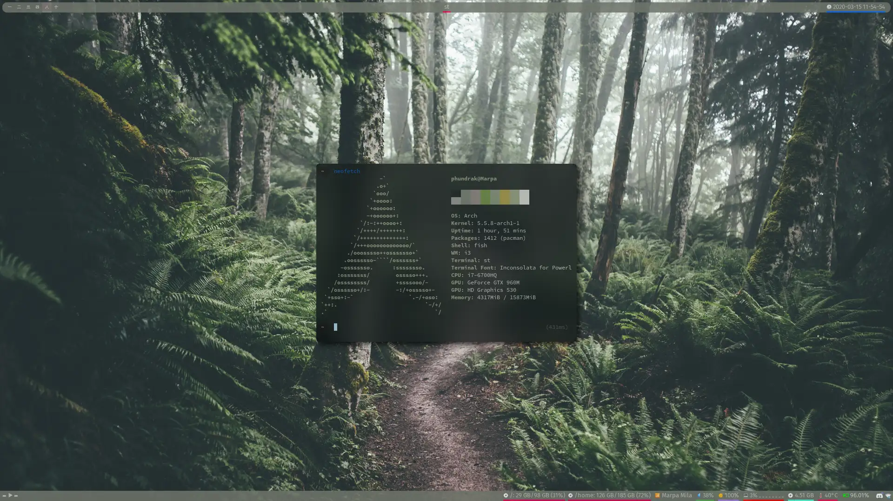
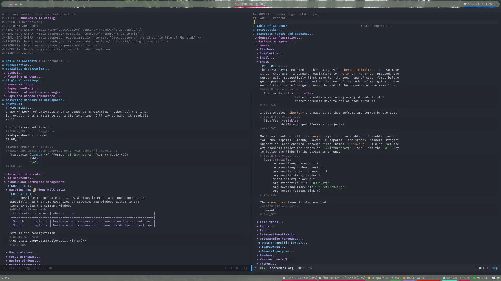
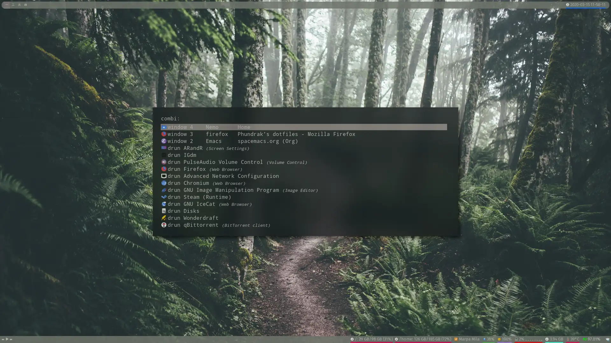

Phundrak’s dotfiles
Table of Contents
- 1. Presentation
- 2. Screenshots
- 3. Features
- 4. Dependencies
- 5. Installation
- 6. Licence
1 Presentation
This is my collection of dotfiles for my daily GNU/Linux environment, tweaked to my liking. If you wish to get the same setup as mine, follow the instructions below.
As you can see, I personally use fish as my shell of choice, and Emacs 27.0.90 (custom build) using Spacemacs (still with Emacs keybinding in Insert mode but with Evil in Normal mode) as my main text editor.
When it comes to my graphical UI, I do not have any desktop environment. Instead, I have two tiling window managers. The historical first on my configuration is i3-gaps, an i3 fork by Airblader with which I use two bars generated by Polybar. My other TWM, and the one I use most often, is AwesomeWM. Both TWMs use pywal to define their color scheme, as well as rofi’s color scheme.
Finally, you can find my configuration for my Ergodox keyboard here. It is optimized for usage with the Bépo layout set as a software layout, and for shortcuts from i3.
2 Screenshots

Figure 2: Desktop with Neofetch in the terminal

Figure 3: Desktop with Emacs opened

Figure 4: Desktop with Rofi
3 Features
- Emacs configuration perfectly tailored for my own use
- Beautiful and comfy i3 and polybar configuration
- And enough information below to get basically the same distro install as I have on my main computer and my travel laptop.
Most of the org files you will find in this repos are the actual source code
of much of my config files. For instance, the bootstrap found in
installation.org exports almost all of its code snippets to
.config/yadm/bootstrap thanks to M-x org-babel-tangle from within Emacs.
Below I will also present and comment some of my short config files which do
not deserve to have a full org file dedicated to them.
3.1 Tiling Window Managers
3.1.1 AwesomeWM
AwesomeWM is the TWM I use the most on my computer between itself and i3. My configuration for it is documented in detail in its corresponding document, which you can find here.
3.1.2 i3 configuration
The i3 configuration is detailed in its corresponding README which you can find here.
3.2 Graphical tweaks
3.2.1 GTK Settings
3.2.1.1 GTK2
Regarding GTK2, I have only one configuration file: the filechooser’s configuration file.
[Filechooser Settings]
The first option alows me to open the file chooser in the current working directory:
StartupMode=cwd
Next, setting the location mode to path-bar will show the path as buttons
that can be clicked rather than the full path.
LocationMode=path-bar
With this configuration, by default we won’t see hidden files.
ShowHidden=true
And we'll also see the size of the visible files.
ShowSizeColumn=true
Now, let’s choose the geometry of our file picker. These two first lines set where the file picker appears:
GeometryX=566 GeometryY=202
And these two describe the size of the window:
GeometryWidth=800 GeometryHeight=400
With these two lines, we set how our files are sorted: by name, and in the ascending order.
SortColumn=name SortOrder=ascending
Our default view mode is a list of files:
ViewMode=list-view
And finally, setting our icon view scale to -1 sets the icon view to the
max size.
IconViewScale=-1
3.2.1.2 GTK3
The following file helps me choosing the aspect of various GTK+ 3 software, including their theme and icons. First, let’s declare the header:
[Settings]
Now, let’s hint to GTK that I prefer dark themes. This can have an influence also on some websites that can detect this preference and therefore set their own theme to dark by themselves.
gtk-application-prefer-dark-theme = true
Next, the icon theme is the Flat Remix Dark icon theme:
gtk-icon-theme-name = Flat-Remix-Dark
Now, the general theme for GTK3 is Arc Dark.
gtk-theme-name = Arc-Dark
gtk-can-change-accels = 1
gtk-xft-antialias=1 gtk-xft-hinting=1 gtk-xft-hintstyle=hintslight # gtk-xft-rgba=rgb
Since window decorations are handled by my WMs, I will leave this variable empty.
gtk-decoration-layout=
3.2.2 Picom
Picom is a standalone compositor for Xorg, and the successor to Compton, itself successor to xcompmgr-dana, itself a fork of xcompmgr. You can find my Picom configuration here.
3.2.3 Xresources
My Xresources file is very short. Indeed, it only contains two lines which
are dedicated to my st terminal to set its font and shell. The font is set
as follows.
st.font: Source Code Pro for Powerline:style=book
And I will set my shell like this:
st.shell: /usr/bin/fish
I can also set the transparency of st (my terminal emulator) like so:
st.alpha: 0.9
I used to have lines dedicated to UXTerm and URxvt, but I cast them out of my system.
3.3 Text and source code editing
3.3.1 Emacs configuration
Emacs is my main text editor, which I use for almost everything. Because, you know…
Emacs is a great operating system, it just lacks a good text editor.
You can find my Emacs config, based on Spacemacs, in my .spacemacs file, and my user configuration in my spacemacs.org file.
3.3.2 Nano
Although it is a very simple piece of software, nano does offer some customization. Mine can be found in my nano.org file.
3.3.3 Rustfmt
You can find my Rustfmt configuration here.
3.4 Custom scripts in PATH
I have written some scripts that help me daily accomplish some simple tasks, like mounting and unmounting a drive or Android device, an emoji picker, a utility to set up my Wacom tablet, and so on. You can find them stored in .local/bin along with their detailed explanation in the README placed in the same folder —which is actually their source code once the org-mode file gets tangled.
3.5 Fish configuration with useful abbreviations
You can also find in my Fish shell configuration in my fish.org file, which contains my usual abbreviations.
3.6 And some minor configuration files
3.6.1 Email signature
This file gets inserted automatically at the end of my emails.
Lucien “Phundrak” Cartier-Tilet https://phundrak.com (Français) https://en.phundrak.com (English) Sent from a Free and Open-Source Linux operating system with GNU/Emacs
3.6.2 Global gitignore
Sometimes, there are some lines that always reappear in gitignores. So, instead of always adding them, let git now that some elements are to be ignored by default, hence the ~/.gitignore_global file. First, we don’t want nano’s backup files.
~*
And object files and output binaries generated by gcc and the likes aren’t
welcome either.
*.out *.o
3.7 Tmux configuration
You can find my tmux configuration in tmux.org. It depends on the submodule .tmux by Gregory Pakosz.
4 Dependencies
Of course, some dependencies are needed for my dotfiles to work well. Here is a non-exhaustive list of software needed by these configuration files:
- GNU/Emacs >= 26.2
- Spacemacs (develop branch)
- My conlanging layer
- Venmos’ w3m layer
- The Fish shell, using fisher
- Luke Smith’s fork of st
- Resloved’s i3-gaps-rounded fork of Airblader’s i3-gaps, itself a fork of i3
- Compton, more specificaly Tryone’s fork
- pywal
- dmenu
- j4-dmenu-desktop
- Rofi
- minted
- Rust (stable and nightly)
- LaTeX and XeTeX (
texlivepackages on Arch Linux) - tmux, based on this repo’s configuration by Grégory Pakosz.
- And a bunch of other stuff, see below
And some other stuff scattered around in my dotfiles.
BTW, I use Arch.
5 Installation
For an installation walkthrough of my Arch Linux installation, check out my installation.org file where I walk you through the first manual steps and through the bootstrap you can execute to automatically take care of a lot of elements.
6 Licence
All of my dotfiles (and my dotfiles only) are available under the GNU GPLv3 Licence. Please consult LICENCE.md for more information. In short: you are free to access, edit and redistribute all of my dotfiles under the same licence and as allowed by the licence, and if you fuck up something, it’s your own responsibility.